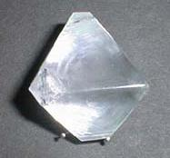
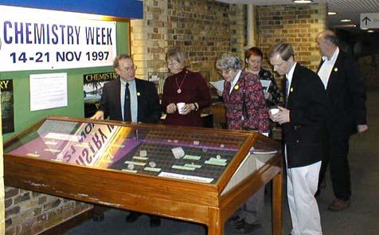
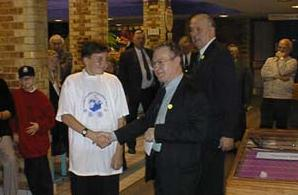

South East England Crystal Growing Competition Winners
Over 200 schools took part in this South East England Crystal growing competition organised by Phil Smith of the Thames Valley Section of the Royal Society of Chemistry with support from the BCA and the BACG. Thanks to industrial sponsorship most of the schools received a Tee shirt printed with the competition logo and a copy of the booklet 'Crystals' published by the Natural History Museum, London. The photograph shows one of the winning crystals, beautifully clear and well formed.

Crystals were grown during the Autumn term and winners decided on 19th November 1997, in the Natural History Museum, London during Chemistry Week. The judges are seen in action on the right, Mike Glazer, Christine Cardin (Reading), Kate Crennell and Harry Powell (Cambridge).

One of the winners is shown below at the prize giving ceremony with the BCA president.

The winning schools were:
Primary Schools
Borrow Grove Primary, Sittingbourne, Kent
St.Ursulines College, Westgate, Kent
Rudyard Kipling School, Brighton
Secondary Schools
Old Palace School, Croydon
Bayliss Court School, Slough
St.Ursulines, Greenwich, London
Open class
Tobermory, Isle of Mull, Sutton Valance, Kent, Walford High School, Middlesex
The photographs were taken by Richard Glazer, of Oxford Cryosystems, one of the industrial sponsors of this competition. We are grateful to him for permission to publish them here.